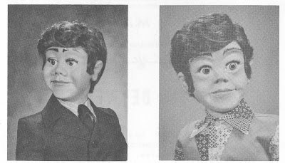

"Storyteller" Figures
3/30/2009
Question: I have a "Randy" figure from your catalogue. (1972, I think, give or take 1 year) Would that have been a figure that you crafted in Littleton, or would that have been one of Craig Lovik's figures? I'm just curious for historical sake. Is it uncommon to find a figure with the no-slot jaw still in great cosmetic and functional condition? That feature didn't seem to be around very long, but I've never had any concerns or complaints with mine.
* * * * *
Answer: "Randy" was built by Craig Lovik in his California workshop. It was the most popular character from the early line of "Storyteller" characters featuring the "living mouth". I don't know the actual amount built, but they would be numbered in the dozens if not hundreds. Many of these were sold through other retailers (Disneyland, and numerous Magic stores) in addition to Maher Studios. In 1973 two new Storyteller figures (Billy and Brian - see photos below)
* * * * *
Answer: "Randy" was built by Craig Lovik in his California workshop. It was the most popular character from the early line of "Storyteller" characters featuring the "living mouth". I don't know the actual amount built, but they would be numbered in the dozens if not hundreds. Many of these were sold through other retailers (Disneyland, and numerous Magic stores) in addition to Maher Studios. In 1973 two new Storyteller figures (Billy and Brian - see photos below)

were introduced. The "living mouth" actually has many years life when properly cared for, and it sounds as though you have cared for yours well. We actually have to replace more of the flexible lower lips because someone repainted the leather (mistake), than those where the leather has actually worn out. "Randy" and his counterparts were discontinued when the first line of "Talk-alots" were introduced ("Archie" and friends) in 1975 as I recall.